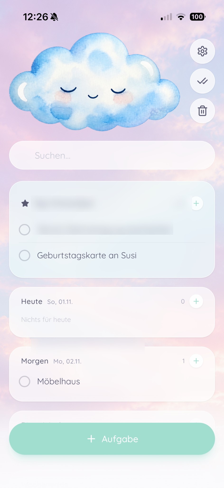

Kleine Apps.
Große
Glücksmomente.
Wir glauben, dass digitale Alltagshelfer nicht nur praktisch sein dürfen – sondern auch schön, freundlich und ein bisschen zauberhaft.
Hallo, Dreamy Do!
Eine To-do-Liste mit Dopaminschub. Organisiere deinen Alltag mit flexiblen Kategorien, sanften Pastelltönen und kleinen Glücksmomenten.

Ordnung darf sich
gut anfühlen.
Dreamy Do verbindet klare Strukturen mit einer liebevollen Gestaltung. Besonders für Menschen, denen Ordnung im Kopf nicht immer leichtfällt – zum Beispiel mit ADHS.
Heute, morgen, diese Woche oder Einkaufsliste – du entscheidest, was gerade wichtig ist.
Ein Häkchen und ein bisschen Glitzern machen Erledigtes sichtbar.
Wähle aus sanften Designs oder gestalte Hintergrund und Wolkenmotiv selbst.
Mit Herz gedacht.
Für echte Tage gemacht.
Manche Tage sind voller Energie. Andere brauchen mehr Ruhe und einen guten Überblick. Dreamy Dock ist ein kleiner Hafen für Apps, die dich im Alltag begleiten – übersichtlich, liebevoll und ohne unnötigen Druck.
Das nächste Herzensprojekt
ist schon unterwegs.
Dreamy Dock wird wachsen. Neben Dreamy Do entsteht bereits eine weitere App, bei der das Miteinander im Mittelpunkt steht.
Eine Frage? Schreib uns! ✉
Du hast eine Frage zu Dreamy Do, einen Wunsch oder möchtest einen Fehler melden? Wir freuen uns über deine Nachricht.